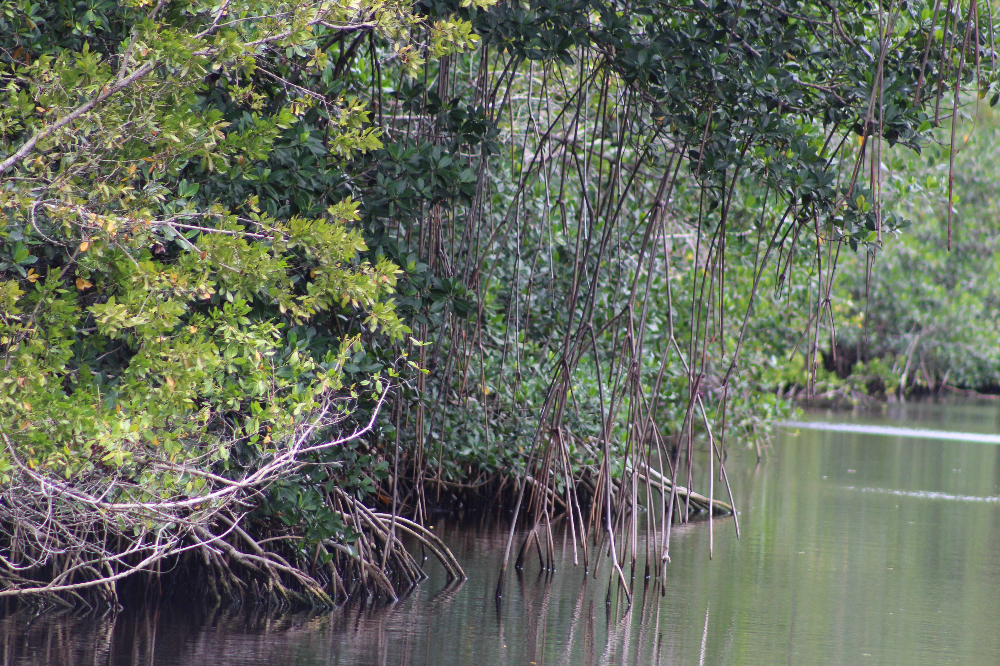

A peninsula can be a crossroads. Follow the water to discover Indigenous homelands, Atlantic connections, living wetlands, stories, and journeys into space.
Guiding question: How does a place shape its people—and how do people reshape a place?

FIELD NOTES / 01Where land meets waterMangrove roots shelter young marine life along Florida’s tidal waterways.A. Sanchez / National Park Service · Public domain. Source
27thState · March 3, 1845
TallahasseeCapital
PeninsulaWater on three sides
Sunshine StateNickname
Your field mission
Observe a placeFollow connectionsBuild a claim
By the end, explain how Florida’s geography connects to its history, compare habitats, and support a claim about a Floridian’s impact with evidence.
Classroom route · 60–75 minutes: locate Florida (5), investigate history (15), explore habitats (15), discuss culture and people (15), then complete a field notebook and exit ticket (10–25). Younger explorers can work with a partner; older students can compare sources and tradeoffs.
01 / Read the place
Between a continent and the Caribbean
Florida extends southeast from the United States. Georgia and Alabama lie to its north; the Atlantic Ocean lies east; the Gulf of Mexico lies west; and the Florida Straits separate the Keys from Cuba. The Panhandle stretches west, while the Florida Keys curve southwest from the peninsula.
One state, several regions
Compare the Panhandle’s beaches and pine forests, north Florida’s springs, central Florida’s lakes and cities, the Atlantic Space Coast, and south Florida’s wetlands and islands. Miami, Orlando, Tampa, Jacksonville, and Tallahassee are different urban centers with different histories.
Water above and below
Rain can soak through limestone into an aquifer, an underground layer that stores and carries water. Springs are places where groundwater reaches the surface. What happens on land can affect drinking water, rivers, and coastal habitats.
Follow the water
01 / ABOVERain falls
Water arrives on the land.
02 / BELOWLimestone aquifer
Groundwater is stored and carried underground.
03 / AT THE SURFACESprings & rivers
Groundwater emerges and flows onward.
04 / AT THE COASTConnected habitats
Water quality affects coastal life.
Atlas challenge: On a classroom atlas, locate Florida, its two neighboring states, Cuba, Lake Okeechobee, the Everglades, and the Keys. Trace a possible sea journey from the Caribbean to Miami. Why might ports connect cultures?
02 / History & famous events
Florida’s story begins long before statehood
Indigenous peoples lived here for thousands of years before Europeans arrived. The Calusa, Timucua, Apalachee, and Tequesta were distinct peoples with different languages, communities, and relationships with land and water. European colonization brought warfare, forced labor, disease, and dispossession.
1513 · Spain claims “La Florida”
Juan Ponce de León’s voyage connected Florida to Spain’s colonial expansion. Calling this a European arrival is more accurate than saying an already inhabited place was “discovered.”
1565 · St. Augustine
Spain established St. Augustine, the oldest continuously occupied European-founded settlement in what is now the United States. Its history includes Indigenous people, Africans, and Europeans.
1763–1821 · Changing colonial rulers
Britain controlled Florida from 1763 to 1783; Spain then regained it. The 1819 Adams–Onís Treaty arranged the transfer to the United States, which took possession in 1821.
1835–1842 · Second Seminole War
The United States used war to force Seminole people from their homelands. Many were removed west; others resisted and remained. Black Seminoles also fought for freedom. The Seminole Tribe of Florida and Miccosukee Tribe of Indians of Florida are living sovereign nations today.
1845–1865 · Statehood, slavery, and war
Florida became the 27th state on March 3, 1845, as a slave state. It seceded in 1861 and joined the Confederacy. Slavery ended in 1865; emancipation did not end discrimination or the struggle for equal rights.
1964 · St. Augustine civil rights movement
Local Black residents and visiting activists challenged segregation through demonstrations. Their courage helped draw national attention to the need for the Civil Rights Act.
July 16, 1969 · Apollo 11 launches
A Saturn V carried Apollo 11 from Kennedy Space Center toward the Moon. Florida’s Space Coast connects geography, engineering, teamwork, and exploration.
1971 · Walt Disney World opens
The resort’s opening became a landmark in central Florida’s tourism growth. Consider how a major attraction changes jobs, roads, housing, water use, and land.
1992 · Hurricane Andrew
Andrew devastated parts of south Florida. The disaster raised urgent questions about buildings, preparedness, and how communities recover.
Discuss: Which events changed political power? Which changed daily life or the landscape? An event can do more than one.
An ecosystem includes living things and their nonliving surroundings. Explore five habitats. In each, look for a connection between water, organisms, and human choices.
Mangrove roots create shelter for young marine animals where fresh water and seawater meet. Protecting the shoreline also protects a nursery.Photo: A. Sanchez / National Park Service. Public domain, U.S. government work. Source and habitat information.
Habitat explorer Select a habitat to investigate ↓
Everglades · A slow-moving wetland
Shallow water moves through sawgrass marshes and other habitats. Small changes in elevation change which plants grow. Alligators and wading birds are part of this connected system.
Pressure: drainage and altered water flow. Think: If less clean water reaches a marsh, what could happen to fish and the birds that eat them?
Wildlife worth noticing
Manatees use warm-water refuges during cold weather. Sea turtles nest on beaches. Florida panthers need connected land habitat. Alligators live mostly in fresh water; American crocodiles in south Florida often use coastal or brackish water.
Conservation is a systems problem
Habitat loss, polluted runoff, invasive species such as Burmese pythons, and warming seas can change food webs. Protecting one species may require protecting its food, water, shelter, and movement routes.
Culture includes language, food, art, music, beliefs, celebrations, and everyday practices. No single dish, accent, or attraction represents everyone in a state.
Indigenous continuity
Seminole and Miccosukee communities maintain living traditions while participating in contemporary life. Patchwork, language, and community knowledge can tell stories of identity and adaptation. Learn from tribal museums and people speaking for their own communities.
Atlantic & Caribbean connections
Cuban and other Latin American communities have shaped Miami and Tampa. Haitian and Bahamian communities have also shaped south Florida. Food, music, languages, and neighborhood histories record journeys across water.
Stories & gathering places
Eatonville is closely associated with Zora Neale Hurston and Black cultural life. Ybor City’s cigar-making history connects work and immigration. Tarpon Springs is known for Greek heritage and sponge diving.
Work, play & creativity
Tourism, farming, fishing, shipping, aerospace, and services connect Florida to other places. Citrus, seafood, theme parks, baseball spring training, auto racing at Daytona, and visual and performing arts are parts of its public image.
Culture detective: Choose a food, song, festival, or neighborhood. Ask who created it, how it traveled, and what people from that community say it means. Avoid treating a tradition as a costume or assuming all residents share it.
05 / Famous people & their impact
Floridians by birth, choice, and contribution
Someone can shape a state without being born there. For each person, identify the Florida connection and a lasting contribution.
ZH
VOICE & STORY
Zora Neale Hurston
Writer & folklorist · Grew up in Eatonville. Her novels and collections of folklore preserved and celebrated Black voices. How can listening be a form of research?
Educator & civil rights leader · Founded a Daytona Beach school in 1904. Her school helped create educational opportunities for Black students and became part of today’s Bethune-Cookman University.
Writer & conservation advocate · Made south Florida her home. Her 1947 book The Everglades: River of Grass helped people see wetlands as valuable living systems.
Seminole resistance leader · Fought forced removal. His story connects Florida to national questions about sovereignty, treaties, and power. Read it alongside Seminole accounts, rather than treating one leader as the whole history of a people.
Place: Label Florida on a map and explain one connection between geography and human activity.
Time: Pick three timeline events. Write a cause or consequence for each.
Nature: Draw a food chain from one habitat. Predict how one environmental change might affect it.
People: Choose one person or community. Record a contribution and a source supporting your description.
Claim: Answer the guiding question with two pieces of evidence from different sections.
Class debate: a growing coastal town
A fictional town wants a new waterfront attraction beside a mangrove habitat. Consider jobs, housing, wildlife, flood exposure, and public access. In groups representing residents, workers, scientists, and planners, propose a plan and explain one benefit, one cost, and one unanswered question. There is no single correct plan; claims need evidence.
Teacher extension & next-state comparison
For younger learners, draw and narrate a four-part postcard: place, animal, person, event. For older learners, compare a government history with a tribal or community account: whose voice is present, and whose is missing? Reuse the field notebook for future states to compare settlement, ecosystems, cultures, and shared national history.
07 / Exit ticket
Check your connections
One more thought: Explain why “Florida is just beaches and theme parks” is an incomplete description. Include one example from history and one from nature.